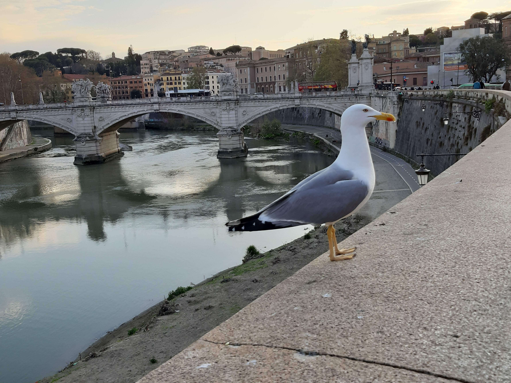

My experience in Italy!
Italy is an amazing country with a lot of natural beauties, as well as a dozen of old architecture. It is a perfect county for those who enjoy history, museums, churches, also you can go to the beach whenever you want, it's only couple of hours from nearly every city or town in Italy. I visited Italy as taking part in Erasmus+ project, so i was hosted in a little village near Rome, Trivento, from a girl my age and her family. I spend the whole week in their house. Our hosts were the nicest people I have ever met in my life. At first i hesitated if I should go or not, but after i came back i realised that i had the most amazing week of my life in Italy and i would do it again anytime.
We learned a lot about Italy in our visit. We spend most of our time with the locals, although there were guests from all over Europe.I've never felt more like home anywhere else I've been. We tasted Italy's specialities like pasta and pizza nearly every day, we visited Rome and Vatican city. Saint Peter's basilica in Vatican was breathtaking. I fell in love with Italy. We also visited a mozzarella factory. I really love cheese so i enjoyed my visit there. We went to an archaeological site from ancient Italy, made of stone. There is still a lot i want to see and learn about Italy and it's beauties so i hope i will visit it again very soon and i hope you do too!
